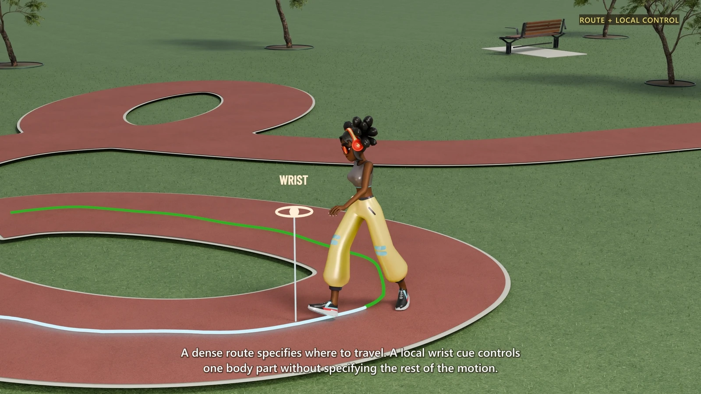

Preview unavailable. Open video.
01 / Route & local control
Follow a path. Coordinate the body.
A prescribed route guides travel; a wrist cue adds a local target to the same motion.
Your cues. One coherent motion.
Mask-Consistent Flow Matching for Composable Kinematic Control in Human Motion Generation
Specify the moments that matter. MotionCanvas organizes a coherent full-body action around them—connecting key poses, routes, local controls, and editable motion context in one model.

A motion request does not need to describe every frame. It can mark a few reliable facts—then let one learned motion field plan how the action passes through them.
Full video
A continuous character demonstration, from drawing a route to directing a jump or a gesture, with an introduction to the method. English narration and captions are included.
The video could not load. Please retry or use the download links below.
Creating character animation takes more than a text prompt. Artists sketch routes, place poses, direct body parts, and preserve existing motion. MotionCanvas maps diverse cues onto one shared time-kinematic canvas. Mask-consistent flow matching keeps assigned canvas values fixed, while one shared model coordinates the motion between and around them.
A dense route specifies where to travel. A local wrist cue controls one body part without specifying the rest of the motion. Sparse foot targets and root-heading constraints leave the transitions open. MotionCanvas connects them with a continuous, coordinated gait. A single request can combine compatible position cues, joint-rotation cues, and root-heading constraints. A few pose and trajectory cues shape the jump, while the model completes its timing and whole-body coordination.
An existing motion can also serve as editing context. Here, the original motion provides editing context, while language changes the gesture to wave the right hand. The edited motion follows the instruction while maintaining a coherent surrounding action. Because every request uses the same canvas, compatible cues can be composed without changing the generator.
Local targets guide the strike, while the model coordinates stance, timing, and recovery. This is cue-conditioned implicit motion planning: motion organized around partial specifications, without an explicit intermediate plan. Here, we provide the hoop position at the dunk time. MotionCanvas plans the full motion around it. Thank you for watching.
Goodbye.
Character showcase
Six moments from the full film. Each highlights what is specified—and what the character must coordinate around it.
Preview unavailable. Open video.
A prescribed route guides travel; a wrist cue adds a local target to the same motion.
Preview unavailable. Open video.
Foot targets and facing constraints leave the intervening motion to the model.
Preview unavailable. Open video.
A jump combines pose and path constraints with whole-body coordination.
Preview unavailable. Open video.
An existing motion provides context; language directs the change in gesture.
Preview unavailable. Open video.
Local cues guide the hands as the body coordinates stance and recovery.
Preview unavailable. Open video.
The hoop position is supplied at the dunk time to guide the complete action.
These clips are excerpts from the rendered demonstration. Benchmark samples and their evaluation viewers are provided below.
From the benchmarks
Twelve MotionCanvas inference cases across temporal control, local targets, sequential generation, editing, and text-to-motion. Each preview includes its input and a link to the original Motius viewer.
In temporal previews, amber identifies supplied poses and blue identifies generated frames. In local-control previews, the wrist marker identifies the controlled joint. Editing previews show the input on the left and MotionCanvas on the right.
Preview unavailable. Open video.
Temporal control · HumanML3D
Input First frame + text
Continue a golf swing from one supplied pose.
Inspect case 014457Preview unavailable. Open video.
Body-part control · HumanML3D
Input Sparse left-wrist position targets + text
Bend, reach, and move the arm behind the body under the same local-control interface.
Inspect case 004945Preview unavailable. Open video.
Sequential generation · BABEL
Input Timed sequence of action descriptions
Walk, reach, lift, turn, and walk again in one sequence.
Inspect case val_8738Preview unavailable. Open video.
Instruction editing · MotionFix
Input Input motion + “Make a wider turn”
Compare the input motion with the language-directed edit.
Source viewer · select case 0003Preview unavailable. Open video.
Style editing · Style–content benchmark
Input Input motion + “Perform hop in the angry style”
Keep the hopping action while changing its expressive style.
Source viewer · select style case 0000Preview unavailable. Open video.
Content editing · Style–content benchmark
Input Input motion + “Change the action to walk while keeping the same style”
Change hopping into walking while retaining the input style.
Source viewer · select content case 0002Preview unavailable. Open video.
Temporal control · HumanML3D
Input Adaptive sparse keyframes + text
Reconstruct the intervening action around scattered pose cues.
Inspect case 003424Preview unavailable. Open video.
Temporal control · HumanML3D
Input First and last frames + text
Complete the motion between the two endpoint poses.
Inspect case 008463Preview unavailable. Open video.
Temporal control · HumanML3D
Input First 20% of frames · no text
Infer the continuation from motion context alone.
Inspect case 009613Preview unavailable. Open video.
Body-part control · HumanML3D
Input Sparse left-wrist position targets + text
Guide a left-handed wave with sparse local targets.
Inspect case 007995Preview unavailable. Open video.
Sequential generation · HumanML3D
Input Walk forward → lift → walk back
Connect three timed action descriptions in a continuous motion.
Inspect case val_7982Preview unavailable. Open video.
Text-to-motion · HumanML3D
Input Text only · no kinematic cues
Generate a walk with swagger directly from its description.
Inspect case 004822Explore the complete collections on Hugging Face
Method at a glance
Kinematic cues are placed on a common time–kinematic-variable canvas. A shared MMDiT predicts the conditional velocity field, while projected Euler updates preserve assigned entries and complete the motion around them.
Release
Explore the public benchmark viewers now. The paper, model link, and dedicated training/inference code release will follow.